Norsk svømming / 2000–2010
Elisabeth Jarland
Fra Bergen til Tyskland og hjem til Oslo. Ti år på landslaget, fortalt gjennom utklippene moren tok vare på.
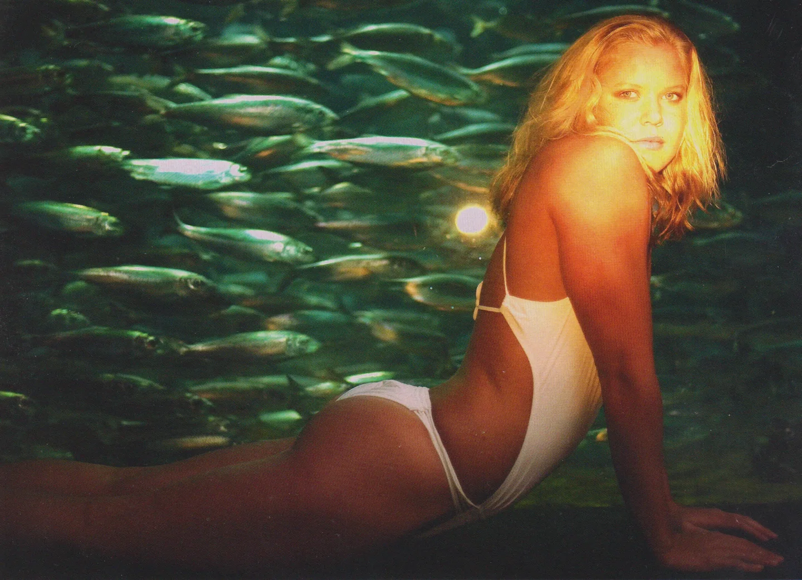
Elisabeths opprinnelige karriereoppsummering
2000–2010
Slik oppsummerte Elisabeth årene som toppsvømmer i den opprinnelige presentasjonen.
- Over 100 NM gull junior & senior
- 10 år på det norske landslaget, støttet av Olympiatoppen
- Tatt mange norske rekorder og har fremdeles en som står i dag
- Deltatt i en rekke internasjonale mesterskap inkludert EM, VM og World Cup
- Finaleplasser i EM og World Cup
- Startet karriæren i Bergen, flyttet til Tyskland som profesjonell svømmer på heltid i 2005, avsluttet karriæren i Oslo
- Erfaring med den tyske kulturen og det tøffe treningsregimet som krever mye av utøverne, med stor konkurranse fra andre utøvere
- Erfaring med press og støtte fra media og aktører i idretten
- Omfattende reisevirksomhet med trening og konkurranser i hele verden, inkludert USA, Sør Afrika, Brazil og en rekke land i Europa
- Trening 2-3 dager daglig i lange perioder, i snitt 60.000 meter svømming i uken samt basistrening, styrketrening og løpetrening
"Champions aren't made in gyms. Champions are made from something they have deep inside them - a desire, a dream, a vision. They have to have the skill, and the will. But the will must be stronger than the skill”Muhammad Ali
Årsarkivet
Fra 12-årsklassen i Bergen til landslaget. Velg et år, eller følg utklippene i rekkefølge.
Tolv år i Slåtthaughallen
I det første utklippet møter vi Elisabeth i 12-årsklassen på «Slåtten 1997» i Bergen.

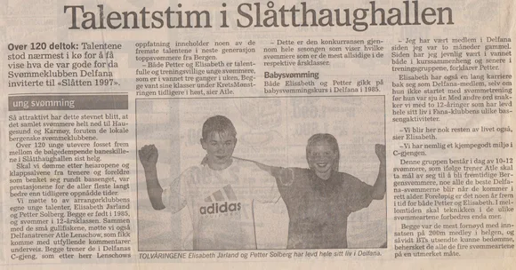
Talentstim i Slåtthaughallen
På vei til landslaget
I Bergen kjemper hun om en plass til nordisk. Det neste utklippet forteller at hun skal svømme for Norge.

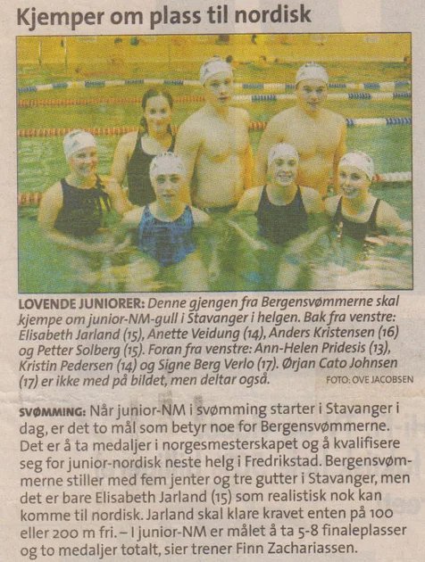
Kjemper om plass til nordisk

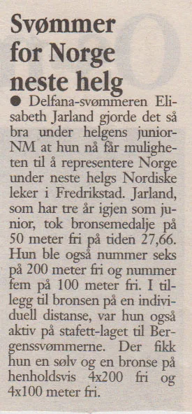
Svømmer for Norge neste helg
Fem gull på Modum
Fem individuelle gull i årsklassemesterskapet gjør Elisabeth til en av stevnets to beste poengplukkere.

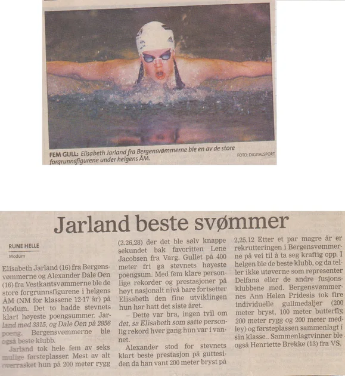
Jarland beste svømmer

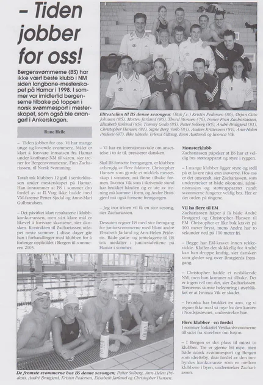
«Tiden jobber for oss!»
Ut i Europa
Med Norge på badehetten blir Elisabeth både EM-debutant og forsidestoff i Norsk Svømming.

Norsk Svømming, nummer 6

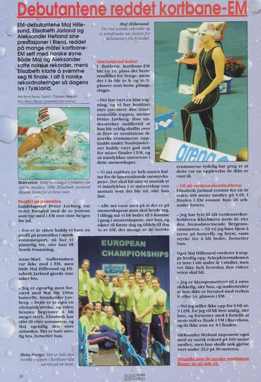
Debutantene reddet kortbane-EM
Rekordene kommer
Fra VM i Barcelona til Nordsjøstevnet i Stavanger. Avisutklippene følger en svømmer som setter rekorder i flere øvelser.

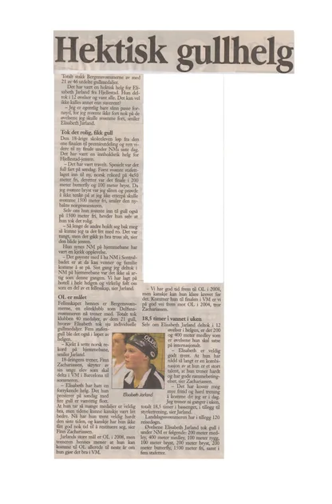
Hektisk gullhelg

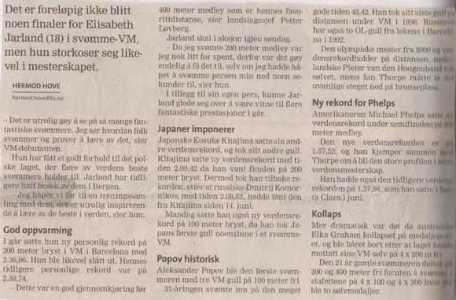
Svømme-VM i Barcelona
Se alle 9 utklipp fra 2003

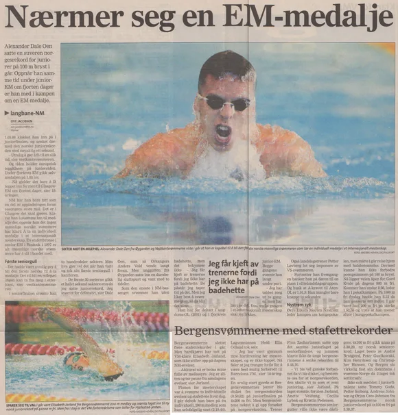
Nærmer seg en EM-medalje

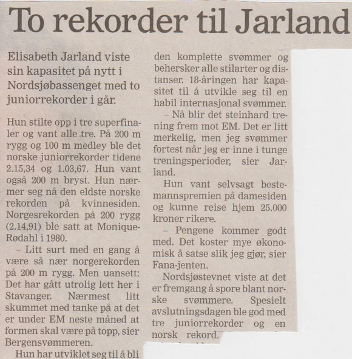
To rekorder til Jarland

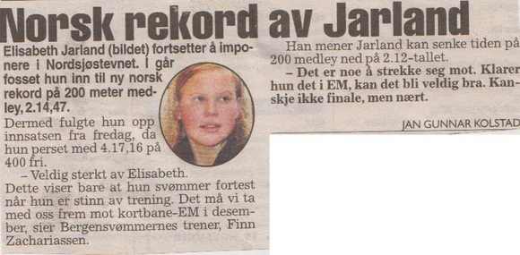
Norsk rekord av Jarland

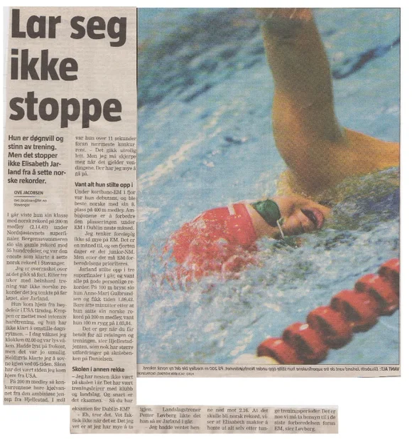
Lar seg ikke stoppe

Norsk Svømming, nummer 3

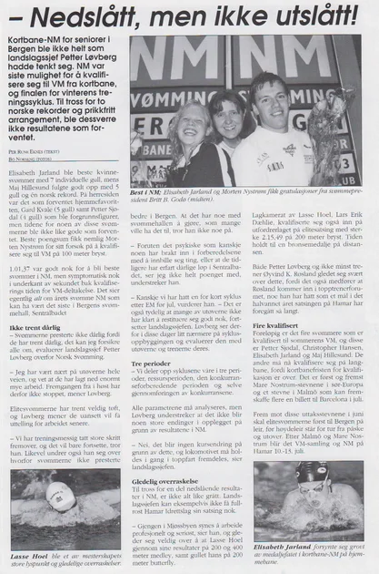
Nedslått, men ikke utslått!

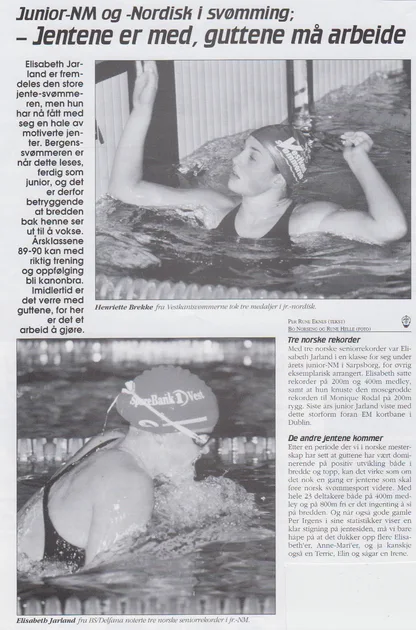
Jentene er med, guttene må arbeide
Mellom gull og tvil
Hun tar ti individuelle gull under kortbane-NM. Samme år forteller hun om slitasjen, om å stå over langbane-NM og om å finne tilbake til gleden.

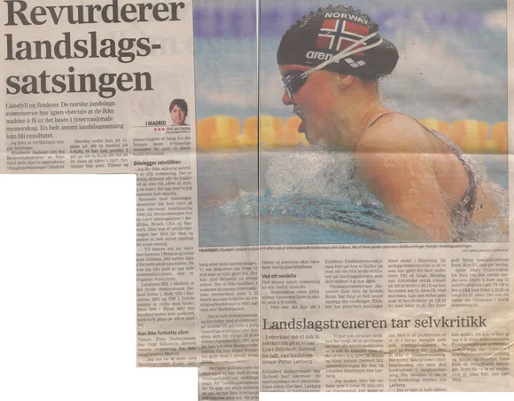
Revurderer landslagssatsingen

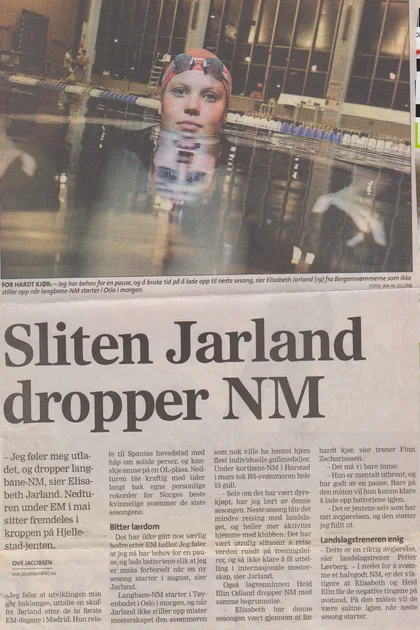
Sliten Jarland dropper NM
Se alle 4 utklipp fra 2004

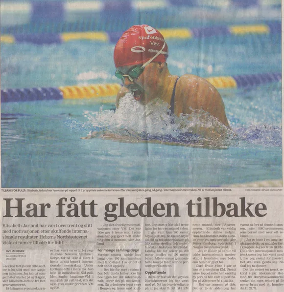
Har fått gleden tilbake

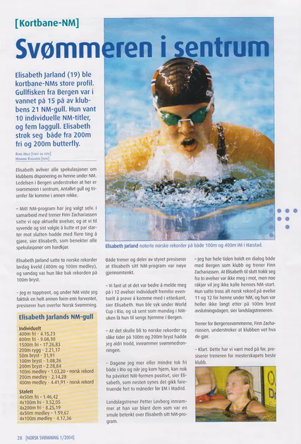
Svømmeren i sentrum
Henne · April 2004
«Jeg drømmer om å gjøre noe historisk.»
Som 19-åring ble Elisabeth intervjuet til «Framtidens idrettsjenter». I samme sak møter vi blant andre Gro Hammerseng, Suzann Pettersen og Vibeke Skofterud.

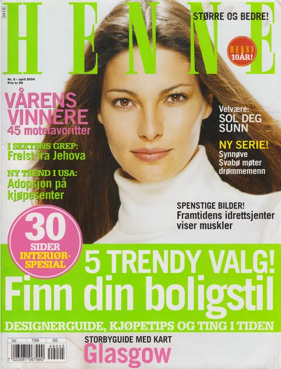
Henne, april 2004

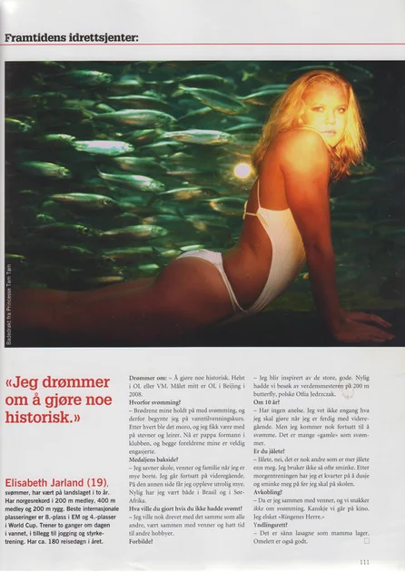
«Jeg drømmer om å gjøre noe historisk.»
Se de tre andre sidene fra oppslaget


Harstad · Kortbane-NM 2004
Femten gull i ett NM
Ti individuelle seire og fem stafettgull. To av medleytidene var norske rekorder da mesterskapet ble svømt.
Individuelle gull · 10
| Øvelse | Gulltid | Merknad |
|---|---|---|
| 400 m fri | 4.15,23 | |
| 800 m fri | 9.08,30 | |
| 1500 m fri | 17.26,83 | |
| 200 m rygg | 2.21,17 | |
| 50 m bryst | 31,91 | |
| 100 m bryst | 1.08,26 | |
| 200 m bryst | 2.28,84 | |
| 100 m medley | 1.03,20 | Norsk rekord |
| 200 m medley | 2.14,28 | |
| 400 m medley | 4.41,91 | Norsk rekord |
Stafettgull · 5
| Øvelse | Gulltid | Merknad |
|---|---|---|
| 4 × 50 m fri | 1.46,42 | |
| 4 × 100 m fri | 3.52,05 | |
| 4 × 200 m fri | 8.25,19 | |
| 4 × 50 m medley | 1.59,67 | |
| 4 × 100 m medley | 4.17,36 |
Fra Bergen til Tyskland
Elisabeth flytter til Tyskland for å svømme på heltid. Mot slutten av året setter hun norsk rekord på 400 meter medley under EM.

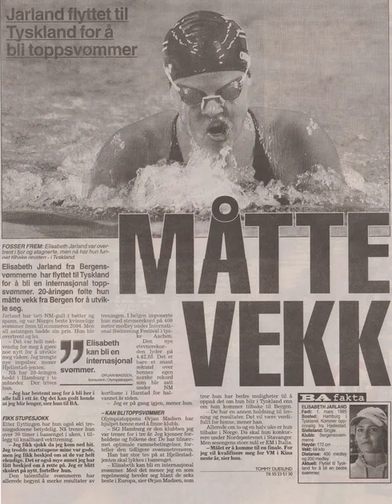
Måtte vekk

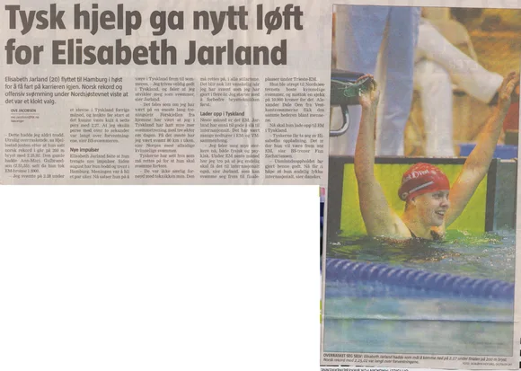
Tysk hjelp ga nytt løft for Elisabeth Jarland

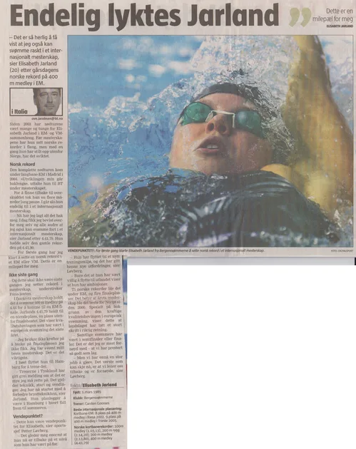
Endelig lyktes Jarland
Se de 12 andre utklippene fra 2005

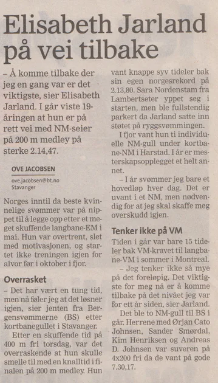
Elisabeth Jarland på vei tilbake

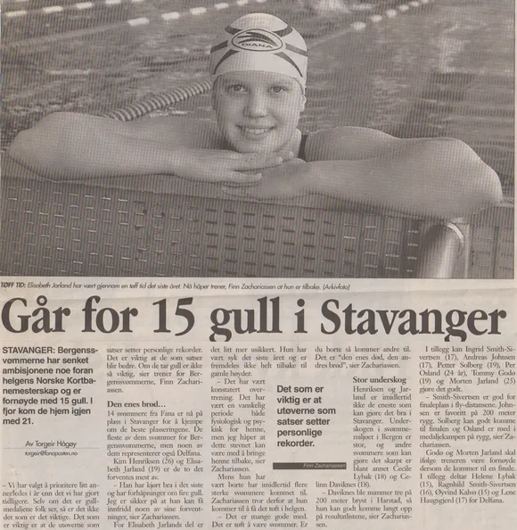
Går for 15 gull i Stavanger

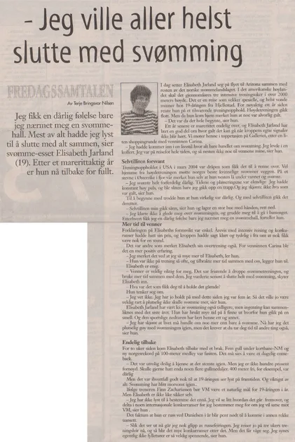
«Jeg ville aller helst slutte med svømming»

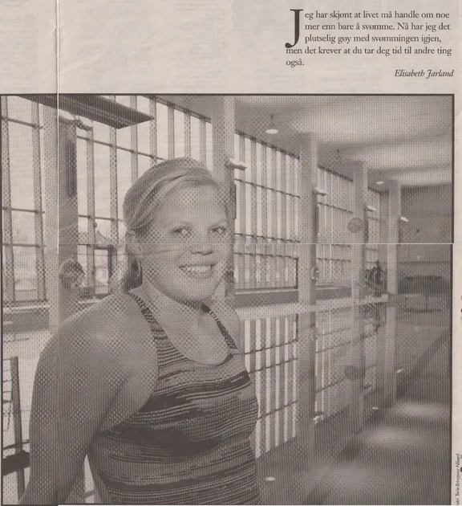
Portrettet fra fredagssamtalen

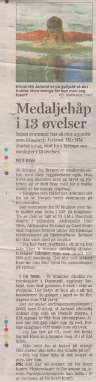
Medaljehåp i 13 øvelser

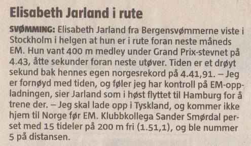
Elisabeth Jarland i rute

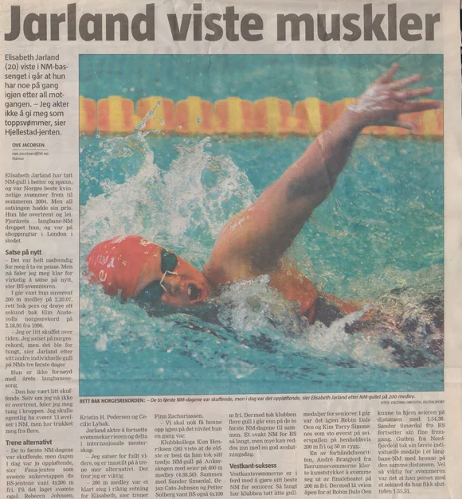
Jarland viste muskler

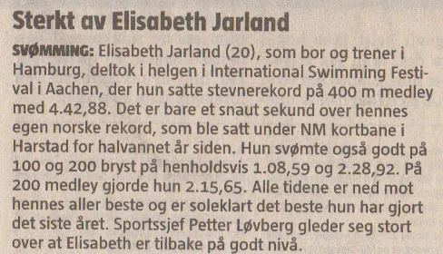
Sterkt av Elisabeth Jarland

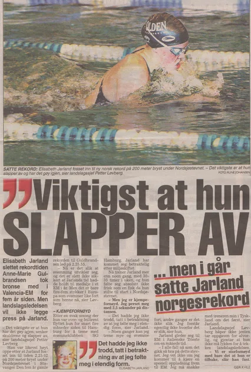
«Viktigst at hun slapper av»

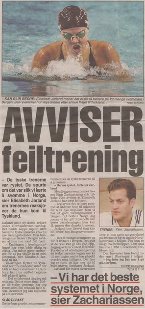
Avviser feiltrening

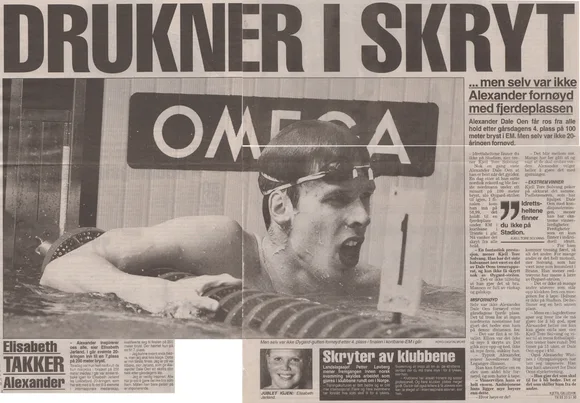
Drukner i skryt

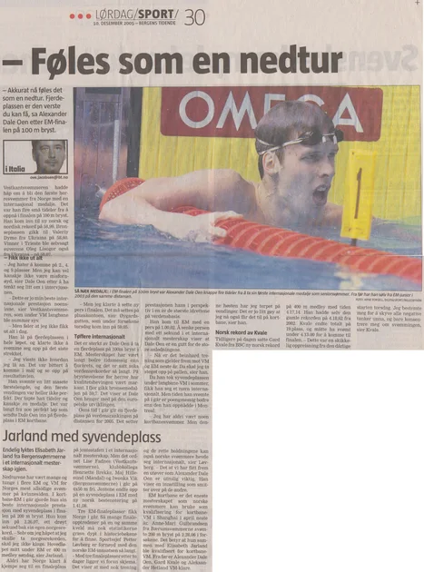
Føles som en nedtur
Tid til å hente seg inn
Utklippene følger både medaljeforventningene og perioden da Elisabeth tar pause fra konkurranser.

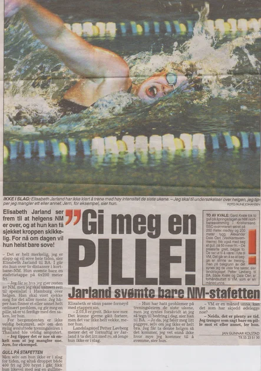
«Gi meg en pille!»

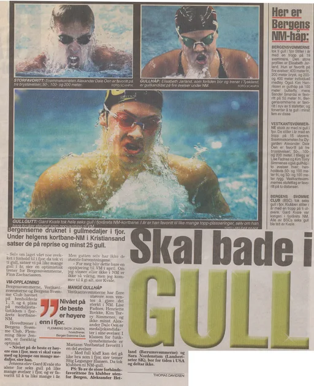
Skal bade i gull
Se alle 4 utklipp fra 2006

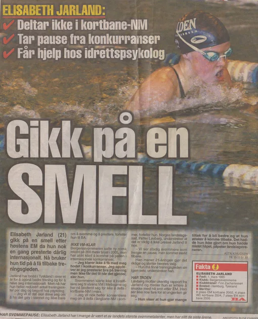
Gikk på en smell

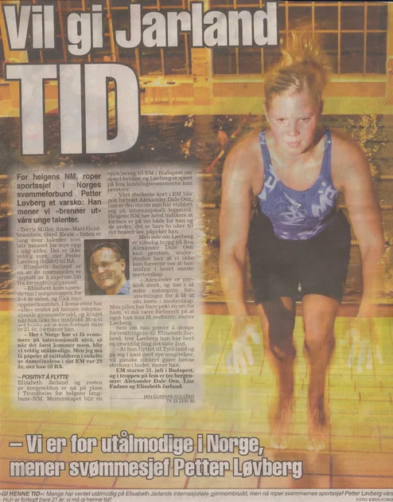
Vil gi Jarland tid
Over fjellet
Et klubbytte bringer Elisabeth til Bærumsvømmerne og et nytt treningsmiljø på Østlandet.

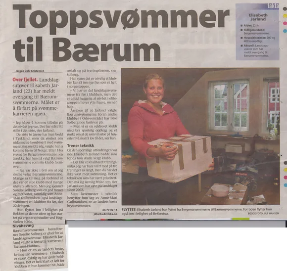
Toppsvømmer til Bærum
Et EM uten Elisabeth
En kort avisnotis forteller hvorfor hun står over mesterskapet.

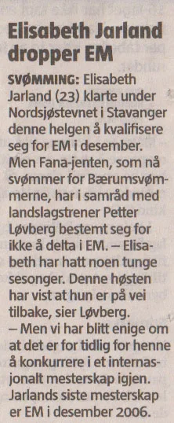
Elisabeth Jarland dropper EM
Studier og svømming
Under Asker Open forteller Elisabeth om livet som landslagssvømmer og ergoterapistudent. Karrieren avsluttes i Oslo.

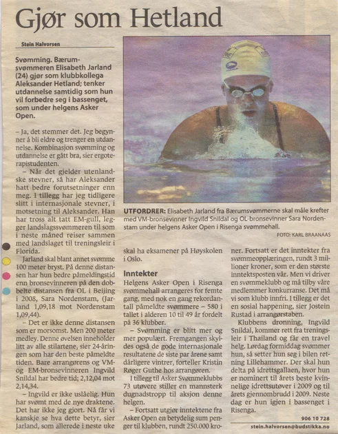
Gjør som Hetland
Etter karrieren · 2015
Fra svømmetak til skøytetak
Fem år etter svømmekarrieren møter Dagens Næringsliv Elisabeth i skisporet. Her er forsiden og intervjuet fra 5. mars 2015.

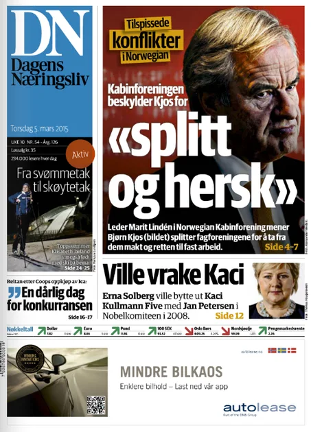
Fra svømmetak til skøytetak

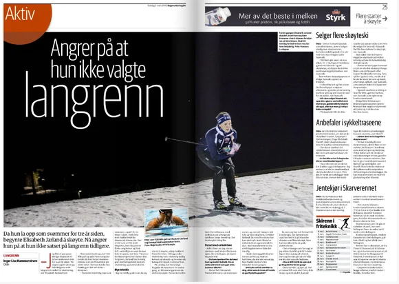
Angrer på at hun ikke valgte langrenn
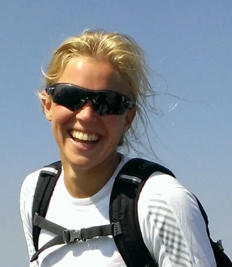
Elisabeths takk
Svømming er en individuell idrett, men jeg hadde ikke oppnådd stort uten et sterkt team og et godt lag rundt meg. Jeg skylder en stor takk til alle som har støttet og bidratt til resultatene i og utenfor bassenget. En spesiell takk til min nærmeste familie, inkludert min kjære mor som har tatt vare på et utvalg artikler fra karriæren slik at jeg kunne lage denne porteføljen i ettertid.Elisabeth
Se originalsamlingen · 43 sider

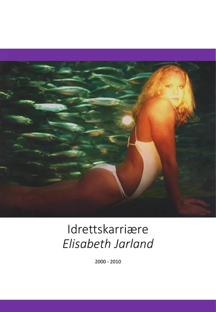
Side 1 · IdrettskarrièreSide 2 · Ti år som toppsvømmerSide 3 · Framtidens idrettsjenterSide 4 · Elisabeth i HenneSide 5 · Talentstim i SlåtthaughallenSide 6 · Kjemper om plass til nordiskSide 7 · Jarland beste svømmerSide 8 · «Tiden jobber for oss!»Side 9 · Norsk Svømming, nummer 6Side 10 · Debutantene reddet kortbane-EMSide 11 · Hektisk gullhelgSide 12 · Svømme-VM i BarcelonaSide 13 · Nærmer seg en EM-medaljeSide 14 · To rekorder til JarlandSide 15 · Lar seg ikke stoppeSide 16 · Norsk Svømming, nummer 3Side 17 · Nedslått, men ikke utslått!Side 18 · Jentene er med, guttene må arbeideSide 19 · Revurderer landslagssatsingenSide 20 · Sliten Jarland dropper NMSide 21 · Har fått gleden tilbakeSide 22 · Svømmeren i sentrumSide 23 · Elisabeth Jarland på vei tilbakeSide 24 · Går for 15 gull i StavangerSide 25 · «Jeg ville aller helst slutte med svømming»Side 26 · Medaljehåp i 13 øvelserSide 27 · Jarland viste musklerSide 28 · Måtte vekkSide 29 · Sterkt av Elisabeth JarlandSide 30 · «Viktigst at hun slapper av»Side 31 · Avviser feiltreningSide 32 · Tysk hjelp ga nytt løft for Elisabeth JarlandSide 33 · Drukner i skrytSide 34 · Føles som en nedturSide 35 · Endelig lyktes JarlandSide 36 · «Gi meg en pille!»Side 37 · Skal bade i gullSide 38 · Gikk på en smellSide 39 · Vil gi Jarland tidSide 40 · Toppsvømmer til BærumSide 41 · Elisabeth Jarland dropper EMSide 42 · Gjør som HetlandSide 43 · Takk fra Elisabeth